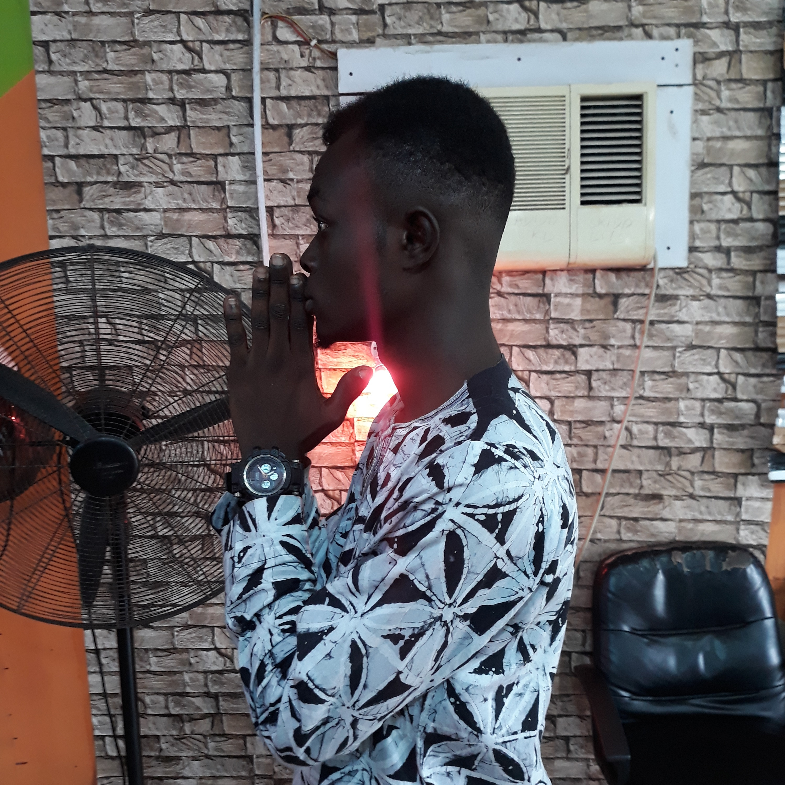

ABOUT

S.D Adetola Adebayo
Web developer || Graphics designer
Hello! I am Adetola. I am a freelance web developer and graphics designer. I’ve always sought out opportunities and challenges that are meaningful to me.
I have a passion for building highly polished user experiences, which are both innovative and functional. Although life has taken many twists and turns, I've never stopped engaging my passion to help others and solve problems.
As a web developer, I enjoy using my obsessive attention to detail, my unequivocal love for making things, and my mission-driven work ethic to literally change the world.
That's why I’m excited to make a big impact at a high growth company.
FUNCTIONAL UI/UX
Websites reflect the image of companies, products, services and brands. So, I build websites to be visually appealing, polished and professional. With great UI/UX, websites I build, are easy to navigate, understand, and are user friendly.
FAST WEBSITES
I build fast and efficient websites which attract more visitors, and those visitors are more likely to choose you over competitions. In addition to the feature of my websites which is speed, are websites with Search Engine Optimization.
RESPONSIVE WEBSITES
From desktop computers to mobile phones and to smart watches, your website will work on any screen size. A website that works well across all devices and screen sizes means your website has a broader reach, that appeals to more visitors.
DYNAMIC WEBSITES
From static single page websites to fully fledged database driven web apps, I write clean, semantic, organized, and valid markup that eliminates excess code and allows easy content update, of which will give you the potential to succeed.
PROJECTS
Looking for a freelancer to solve your website and graphics issues? I'm able to take on whatever project. From a simple static site for online presense, to a
fully wedged dynamic site for e-commerce purposes, communication purposes, etc. Be it a fresh or overhauling existing project, I'm fully versed in various tools and can easily
adapt to your workflows. Check out the templates below and get in touch with me to discuss the specifics and see how i can help deliver your project!